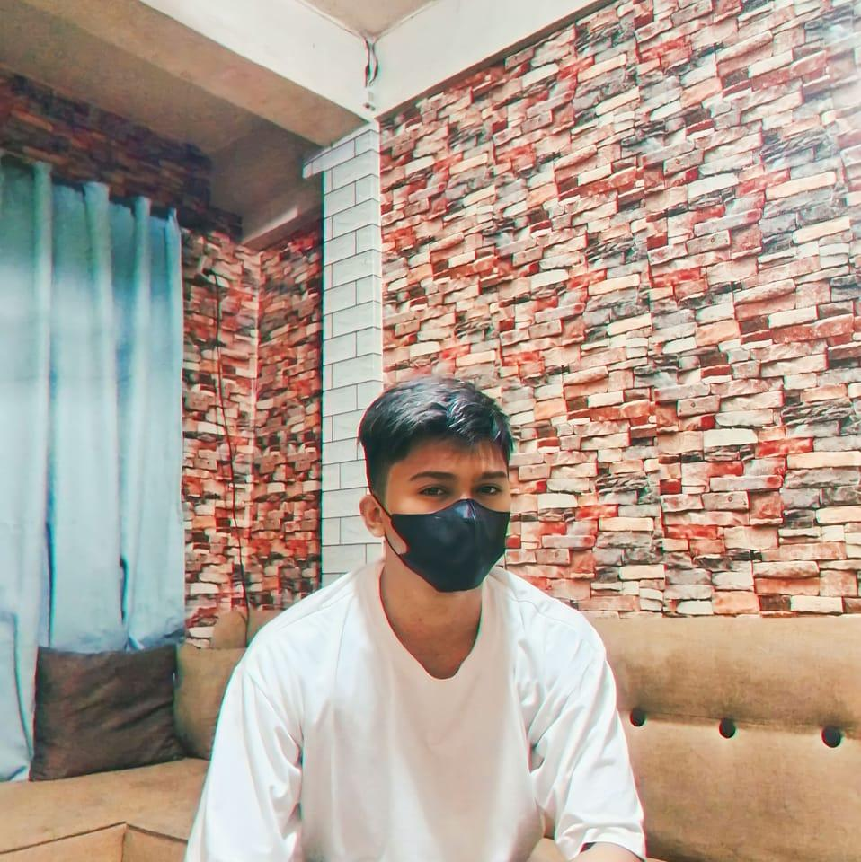

Hello, I'm John Patrick, a web development enthusiast driven by a passion for creating seamless and engaging digital experiences. I am constantly exploring new technologies and refining my skills to build impactful web solutions. My journey is fueled by curiosity and a commitment to continuous learning.
Outside of coding, here are some of my favorite activities and interests:
Feel free to reach out and connect with me on Facebook: John Patrick Lacerna.